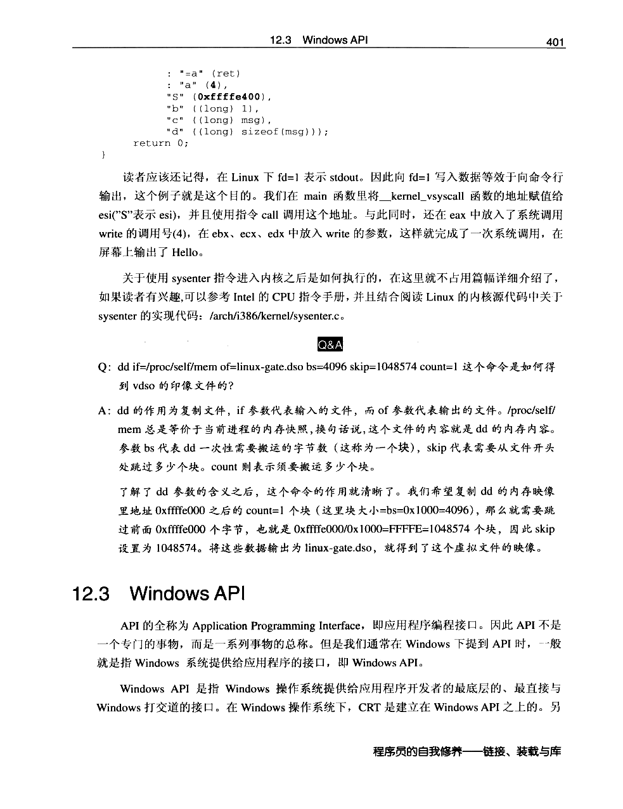
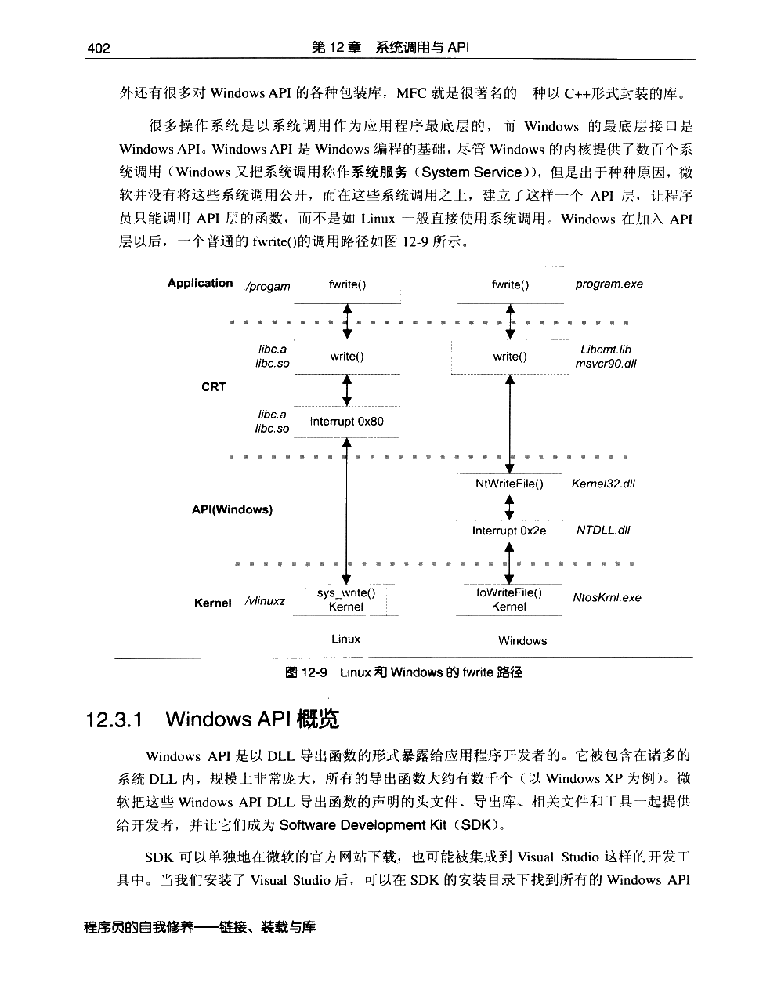
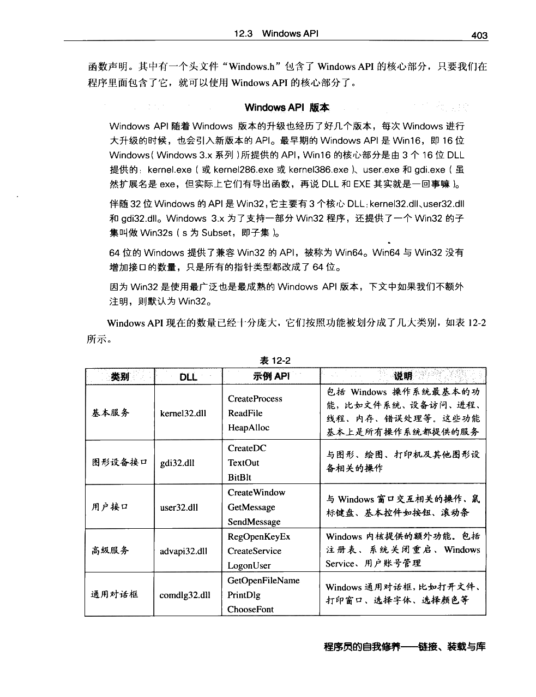
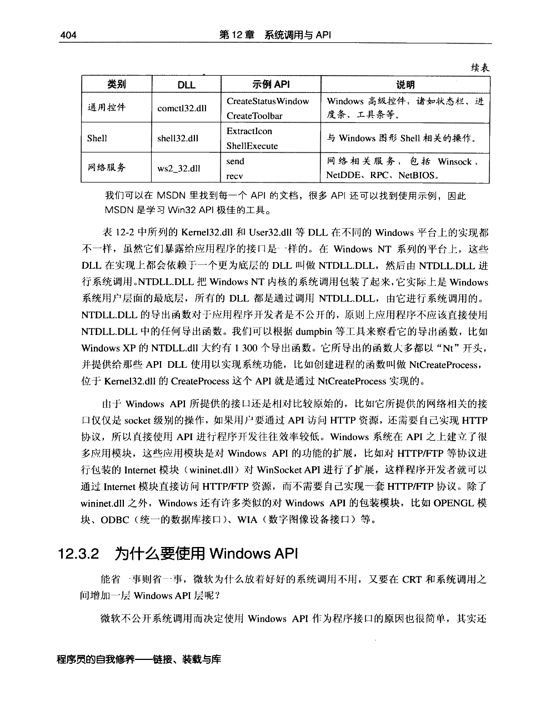
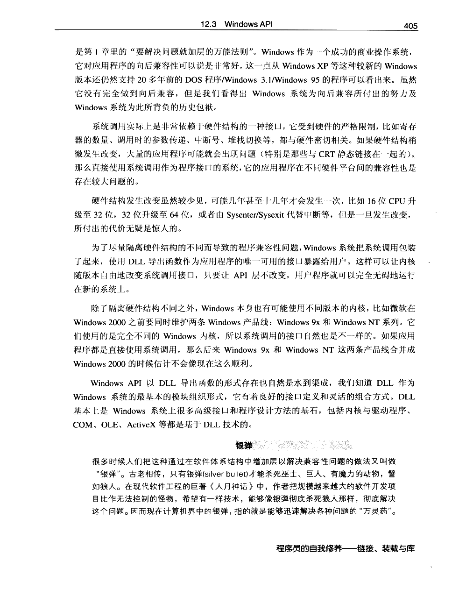
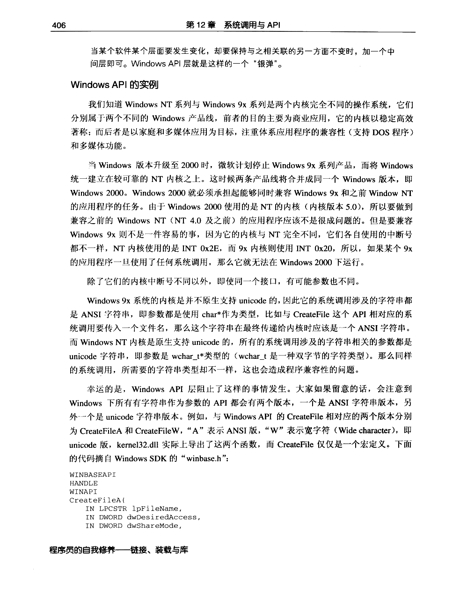
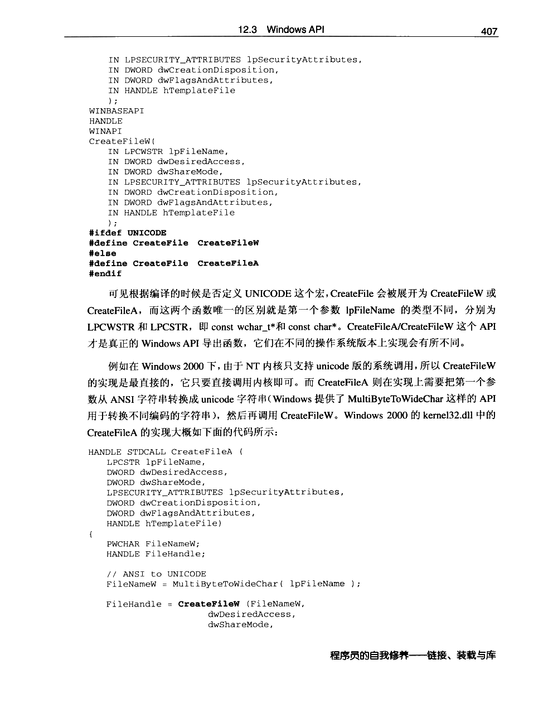
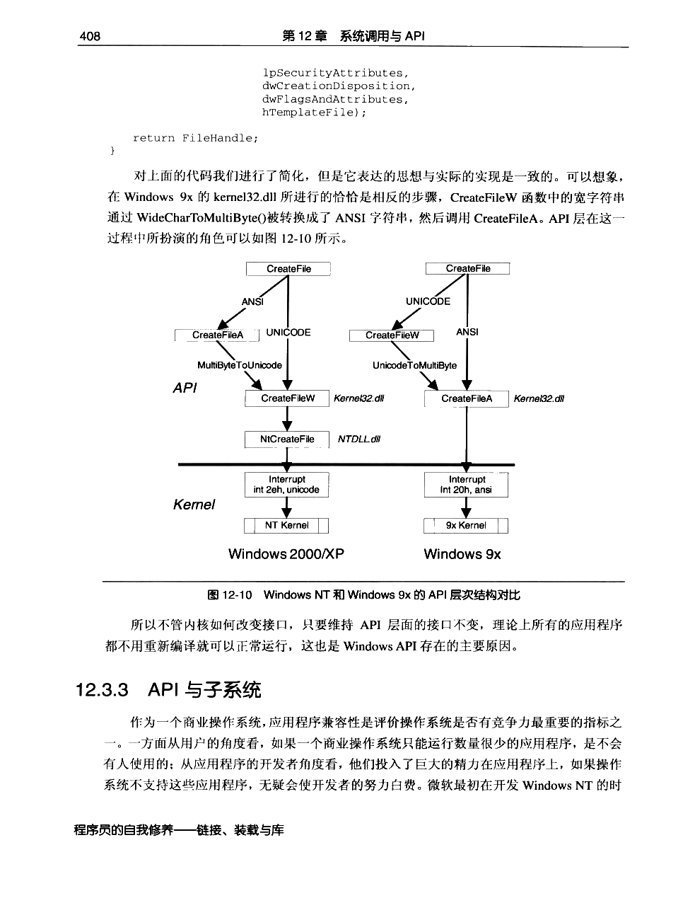
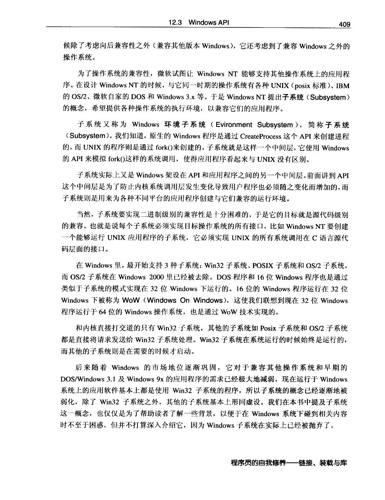

← 返回正文12.3 Windows API
PDF 第 424 页 · 书内第 401 页
PDF 第 425 页 · 书内第 402 页
PDF 第 426 页 · 书内第 403 页
PDF 第 427 页 · 书内第 404 页
PDF 第 428 页 · 书内第 405 页
PDF 第 429 页 · 书内第 406 页
PDF 第 430 页 · 书内第 407 页
PDF 第 431 页 · 书内第 408 页
PDF 第 432 页 · 书内第 409 页